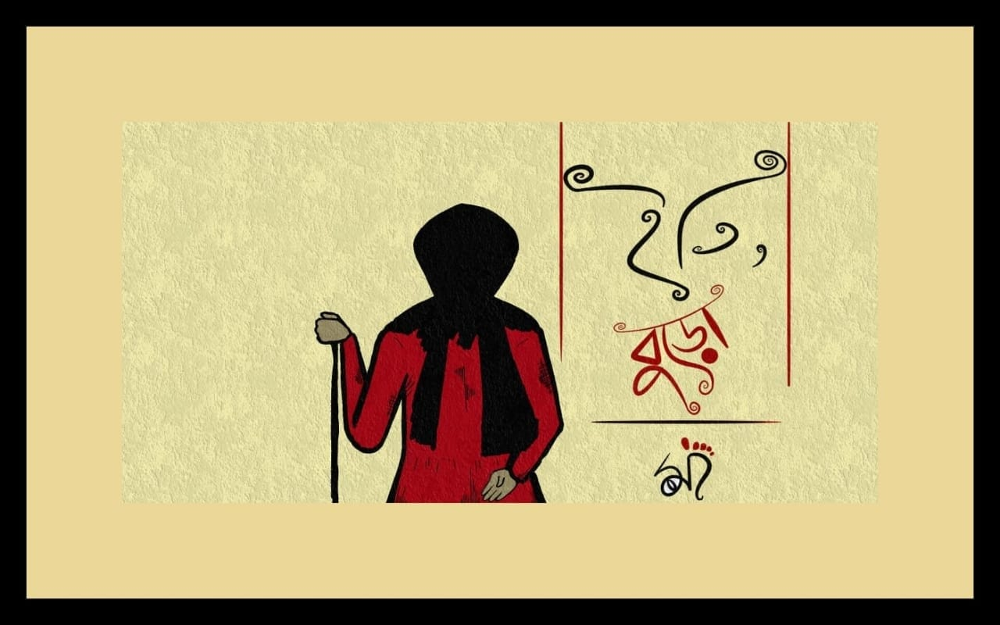

Song credits :
Lyrics - Indrajit Bala
Composer - Indrajit Bala
Singers - Rajib Dutta, Indrajit Bala
Shaker - Shibam Das
Guitar - Arpan Rakshit, Indrajit Bala
Drawing -Ishika Bala, Tiyasa Das,
Rajib Dutta
Animation -Rajib Dutta
Edited by - Rajib Dutta
Special Thanks - Souvik Guha,Animesh Roy,Niladri Madhab Biswas,Deba Majumder(Dada)
এছাড়াও তাদের সবাইকে অনেক ভালোবাসা, যারা ঐ রাতে বুড়ো ও বুড়োর মায়ের জন্য ভেবেছিলো!
বুড়োর উদ্দেশ্যে: বুড়ো,যখন বড়ো হবি, আমরা, তোর দাদা দিদিরা এটাই চাই যে,তোকে যেমন করে তোর মায়ের থেকে আলাদা করেছিলো এই সমাজ, তোর সাথে ও তোর মায়ের সাথে যেই ভুল গুলো করেছিলো এই সমাজ, সেই ভুলের যোগ্য জবাব দিবি, আর যেনো কোনো মায়ের থেকে তার সন্তানকে কেড়ে না নেওয়া হয়। ভালো থাকবি, খুব তাড়াতাড়ি দেখা হবে।
Check it out Our Facebook Page 👇

Lyrics :
- ইতি, বুড়ো
আজও কতো মায়ের কোল থেকে তার সন্তানকে আলাদা করে চলেছে এই সমাজ। সেই সকল মায়ের খোঁজ নিতে চায় না এই সমাজ, এই সমাজ আমিও।
'মা',
"জানিনা কোথায় আমি, তুমি কোথায়?
কোথায় নিয়ে এলো আমায় ,তুমি কোথায়?
কিভাবে কেমন আছো?খুব চিন্তা হয়!
কোথায় নিয়ে এলো আমায় ,তুমি কোথায়?
হয়তো ভাবছো, 'বুড়ো খেলতে গেছে',
'সন্ধ্যা হলেই আবার ফিরে আসবে'
আমায় খুঁজে খুঁজে ক্লান্ত,ফুরিয়েছে কান্না!
আটকে রেখেছে আমায় ,যেতে দিচ্ছে না!
ওদের থেকে আমায় নিয়ে যাও না,
বলে নাকি ,তুমি আমায় নিয়ে ভাবো না,
নিজে না খেয়ে আমায় খাইয়ে দিতে মা,
ওরা বলে আমায় তোর পাগলী মা !!
কেউ তো কখনো তোমার কাছে জানতে চাইনি,
কেন হতে হলো তোমায় আজ পাগলী মা?
তোমায় কেন রাস্তায় রাস্তায় ঘুরে বেড়াতে হয়!
জামার আড়ালে কেন অস্ত্র নিতে হয় ?
জানি এ সমাজ তোমায় নিয়ে ভাবেনা ,
তাই তো তুমি আজ পাগলী মা ,
এই সমাজ ঠিকই একদিন উত্তর পাবে!!
তোমার বুড়ো তোমার কাছেই ফিরে আসবে।"
ইতি, বুড়ো